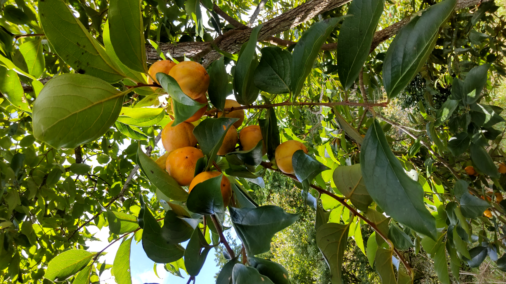
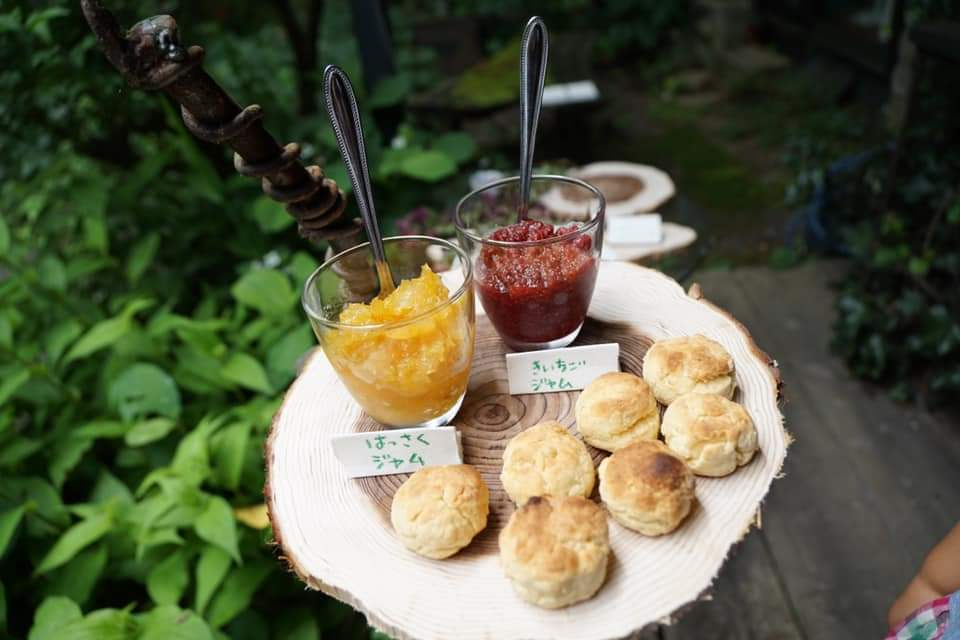

「腸は第二の脳」とよく言われますが、腸と頭皮の関係はあまり知られていません。腸内環境が乱れると、栄養の吸収が落ち、炎症が起きやすくなり、それが頭皮や髪の状態にも影響します。
発酵食品には、腸内の善玉菌を育てる乳酸菌・酵素・有機酸が豊富に含まれています。薬や補助食品ではなく、毎日の食事の中に自然に発酵を取り入れていく——それが一番続けやすくて、体にも無理がない方法です。
私が京北で実践している発酵食品を3つご紹介します。どれも、野生や自然農の素材から手づくりしているものです。
ENZYME JUICE
① 野生果実の酵素ジュース
協生農法・野生採集の果実で仕込む
梅・ウスラウメ・はっさく・きいちご など
酵素ジュースは、生の果実と砂糖を発酵させてつくる飲み物です。果実が持つ天然の酵素・ビタミン・ポリフェノールが、発酵によってさらに体に吸収されやすい形になります。
私が使う果実は、京北の協生農法の畑や山で採集したもの。農薬も化学肥料も使わない土地で育った果実は、香りが濃くて生命力が違います。梅のほかにも、ウスラウメ・はっさく・きいちごなど、季節に採れたものをそのまま仕込みます。
使っている果実
髪と頭皮への働き
酵素は食べ物の消化・吸収を助け、栄養が髪の毛根まで届きやすくなります。ビタミンCはコラーゲン合成に欠かせない成分で、頭皮の弾力を保つのに重要。ポリフェノールの抗酸化作用は、頭皮の酸化（老化）を穏やかに抑えてくれます。

PERSIMMON VINEGAR
② 柿酢
柿から生まれる、やさしい酸味
柿 → アルコール発酵 → 酢酸発酵の2段階
柿酢は、熟した柿をそのまま発酵させてつくる果実酢です。柿がアルコール発酵し、さらに酢酸発酵することで、やさしい酸味とともに豊かな栄養が生まれます。
市販の醸造酢と違い、柿酢には柿由来のタンニン・ポリフェノール・ミネラルがそのまま含まれています。味もまろやかで、毎日の料理や飲み物に使いやすいのが特徴です。
髪と頭皮への働き
酢酸は血行を促進し、毛根への栄養が届きやすい状態をつくります。柿に含まれるタンニンには収れん作用があり、頭皮の引き締めにも。腸のpHを整えることで、ミネラルの吸収率も上がります。
日常での使い方
水で薄めてそのまま飲む「酢ドリンク」が一番シンプル。ドレッシング・酢の物・炒め物の隠し味としても使えます。毎日少量を続けることが大切で、「今日も飲んだ」という小さな積み重ねが、じわじわと体を変えていきます。

MISO
③ 手前味噌
日本が誇る発酵食品の王様
大豆 × 塩 × 麹 → 時間が生み出す深い味
味噌は日本の発酵食品の中でも、もっとも歴史が深く、栄養バランスに優れたものの一つです。大豆・塩・麹というシンプルな材料から、時間をかけて無数の栄養素が生まれます。
手前味噌（自家製）の良さは、麹菌が生きていること。市販の加熱処理された味噌と違い、酵素・乳酸菌が活きたまま体に届きます。毎日の味噌汁一杯が、腸内環境の最強の味方です。
髪と頭皮への働き
大豆由来のタンパク質は、髪の主成分ケラチンの材料になります。ビタミンB群は頭皮の細胞代謝を助け、亜鉛・鉄は毛母細胞の働きをサポート。乳酸菌・麹菌は腸内環境を整え、これらの栄養素が体にしっかり吸収される土台をつくります。
手前味噌が特別な理由
市販の味噌は流通の都合上、加熱処理されているものが多く、酵素・乳酸菌が失活しています。手前味噌は麹が生きたままなので、食べるたびに生きた菌を腸に届けることができます。また、素材の配合や塩加減を自分で決められるのも自家製の大きな魅力です。
（準備中）
RAW JAM
④ 生ジャム（非加熱）
酵素ジュースの果実をそのままペーストに
はっさく・きいちご など
酵素ジュースを仕込んだあと、砂糖と発酵した果実が残ります。その果実をそのままペースト状にしたものが生ジャムです。加熱しないので、酵素も栄養もそのまま生きています。
市販のジャムはほぼすべて加熱処理されており、果実本来の酵素やビタミンが失活しています。生ジャムは非加熱だからこそ、果実の生命力がそのまま体に届きます。はっさくの爽やかな香り、きいちごの鮮やかな酸味——素材の味がダイレクトに感じられます。
髪と頭皮への働き
酵素ジュースと同様、非加熱の果実には消化酵素・ビタミンC・ポリフェノールが豊富に含まれています。毎朝スコーンやパンに添えるだけで、おいしく続けられる発酵習慣になります。


SUMMARY
3つの発酵食品が体にもたらすこと
酵素ジュース
生きた酵素・ビタミンCで消化吸収力を上げる
柿酢
血行促進・頭皮収れん・腸のpH調整
手前味噌
良質なタンパク質と生きた乳酸菌で腸を整える
生ジャム
非加熱で酵素・栄養をそのまま。毎日続けやすい発酵習慣
3つに共通するのは「腸内環境を整える」という働きです。腸が元気だと栄養の吸収が上がり、免疫が整い、頭皮の炎症が起きにくくなります。髪のケアは外側だけではなく、内側の環境づくりから——発酵食品はその最初の一歩です。
FROM KEIKO
自然のリズムの中で発酵と生きる
京北に移り住んでから、季節ごとに何かを仕込む生活が当たり前になりました。梅が採れたら酵素ジュース、柿が落ちたら柿酢、冬の手前には味噌仕込み。
発酵は「待つ」ことが必要です。急かせず、温度と時間に任せる。その感覚が、美容の仕事にも通じると感じています。頭皮も髪も、急に変わることはない。でも、正しい方向に続けていけば、必ず変わる。
「体の外側にいいものを使う」だけでなく、「内側から整える」という視点を持つと、美容との向き合い方がまるごと変わります。まずは毎日の食事から、ひとつだけ発酵を取り入れてみてください。
NEXT